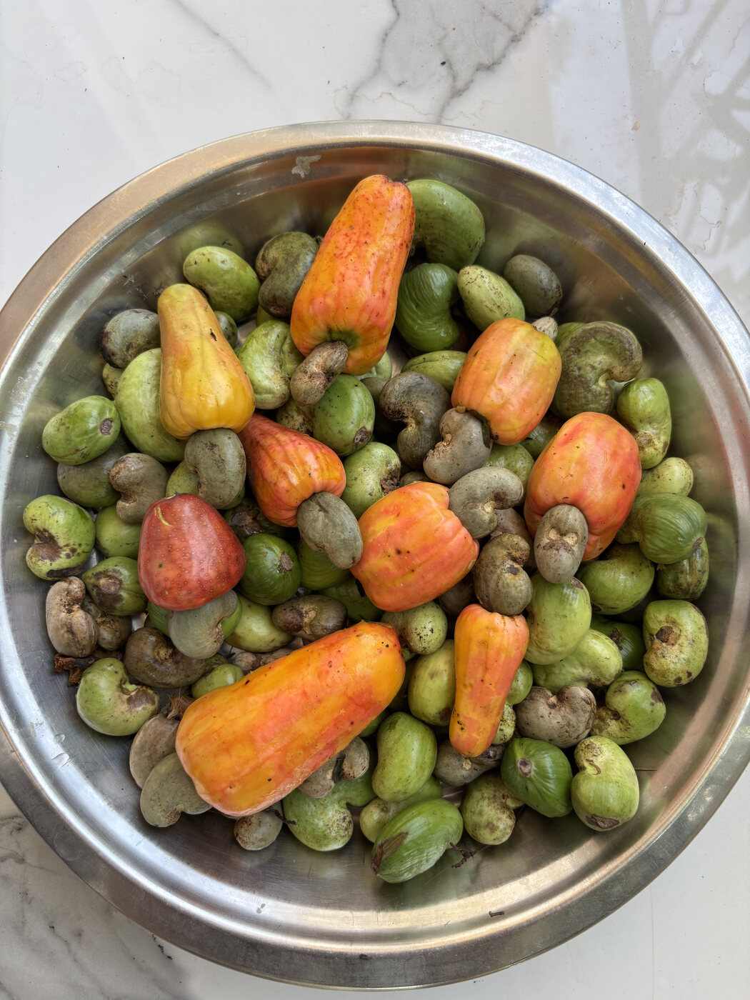
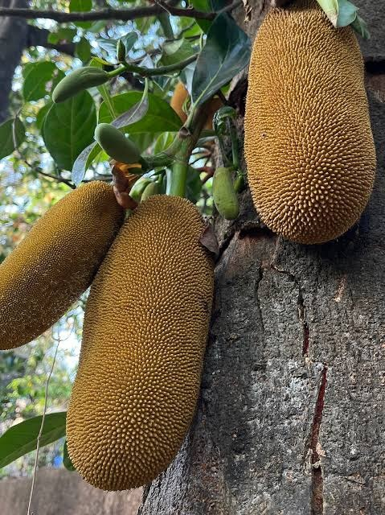
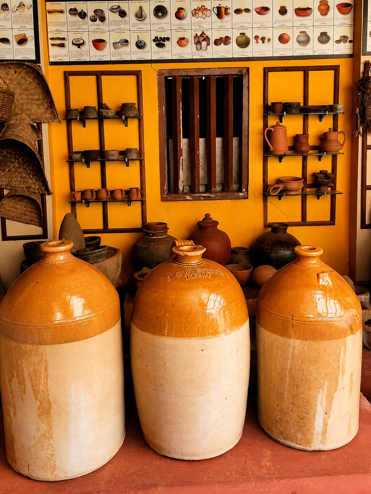
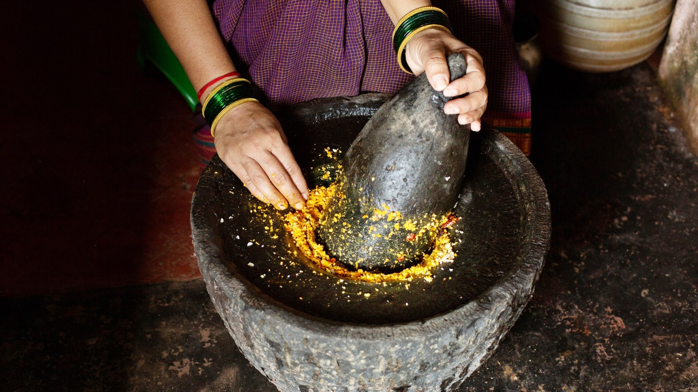
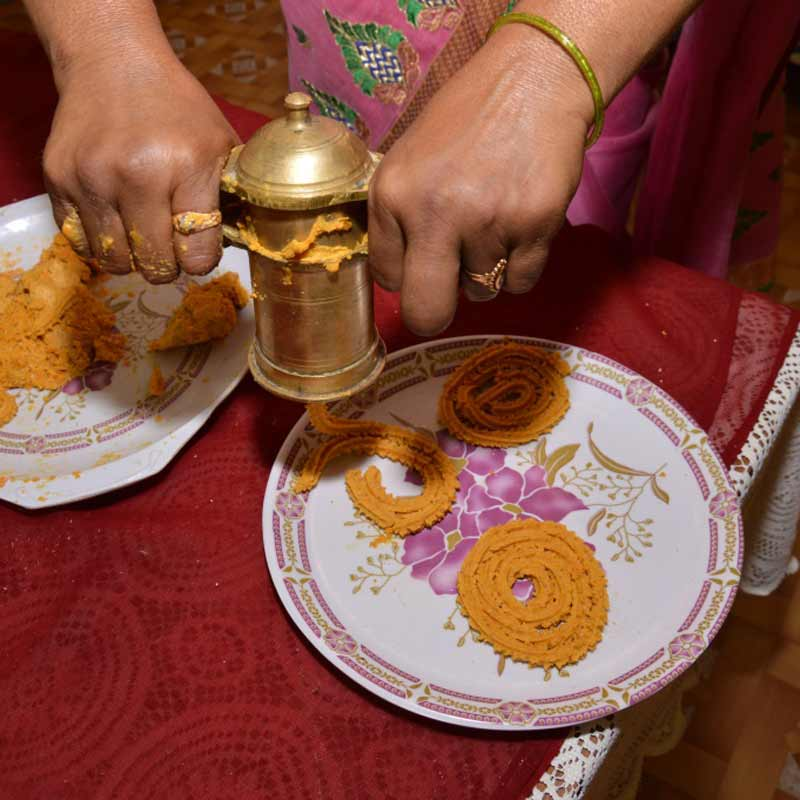
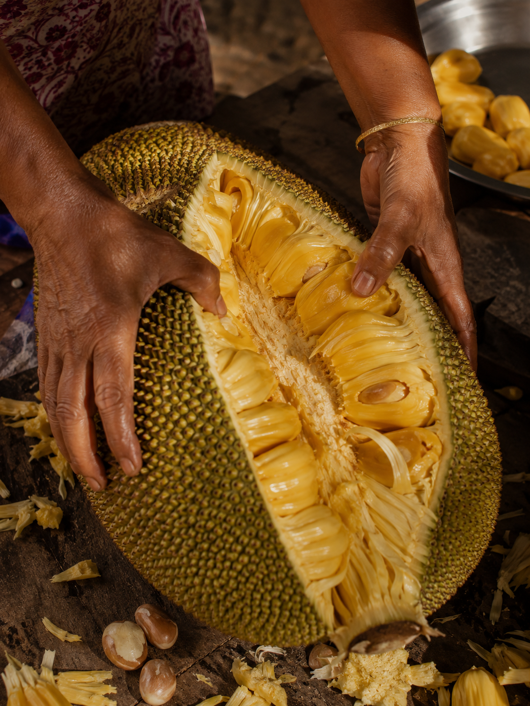
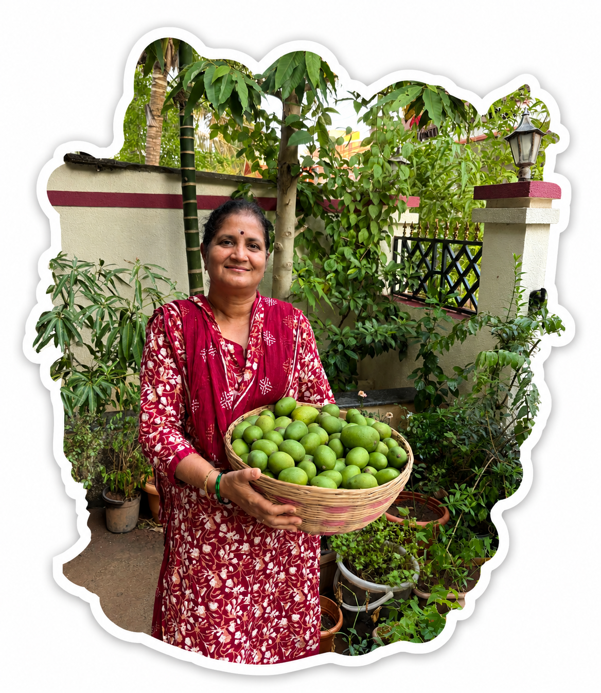

Some paths don’t lead away from home. They lead us back to it.


01
Of monsoons, feasts and familiar hands.
Honest ingredients✳Old family methods✳Flavours with a sense of place✳Honest ingredients✳Old family methods✳
02
Our story
The heart behind the name
Every home has a person whose food brings everyone back.
Kokanee Hooman began with Sharada Kaku, inspired by the belief that a warm meal is one of the oldest ways to welcome a friend home.
FROM GOA, WITH FEELING01 / 04




A Goan kitchen holds its stories in the things that are used, washed, and used again.
GOA · HOME
The homemaker
Kokanee Hooman is inspired by Sharada Kaku, a remarkable homemaker whose seafood curries have been at the heart of countless family gatherings for decades. In Konkani, "Hooman" is a traditional coconut-based curry loved across the Konkan coast. But "Hooman" also means friend, making Kokanee Hooman feel like a Konkani friend who welcomes you home with a warm, comforting meal.
Anyone who has tasted Sharada Kaku's cooking remembers it. Friends and relatives who shared her table never forgot her curries. They often spoke about how much they missed those flavours and eagerly looked forward to their next visit for another meal.
Hearing this time and again made us wonder: "Why not share those cherished flavours and the story behind them with everyone?" And that simple thought became the beginning of Kokanee Hooman.
No shortcuts
For Sharada Kaku, cooking has never been about simply preparing food. It is an expression of love. Every dish is made with patience, care, and her whole heart. She believes that food should never be rushed.
In a world where shortcuts have become common, even in many restaurants, she believes they slowly take away the magic that makes traditional food truly special.
Instead of relying on ready-made spice mixes, she carefully selects, roasts, and grinds every spice by hand. She constantly experiments with their proportions, refining each recipe while preserving its authentic soul. It is this dedication and curiosity that gives every meal its own unique flavour.
More than the plate
To her, food is much more than what is served on a plate. Food carries memories. It carries culture. It carries family traditions from one generation to the next.
Every festival brings recipes that have been lovingly passed down over the years, whether it is Patoli, Modak, Chakli, or countless other Konkani delicacies. These dishes demand time, patience, and effort, but she believes that is exactly what makes them meaningful.
The joy of preparing them together, sharing stories in the kitchen, and serving them to loved ones is just as important as eating them.
The jackfruit ritual
Even something as simple as cutting open a ripe Phanas (Jackfruit) becomes a celebration. As it ripens, its sweet aroma fills the home. Everyone gathers around, excited to watch it being opened, sharing conversations, laughter, and anticipation.
It is a simple moment, yet one that creates memories lasting a lifetime. These are the little joys of traditional cooking that no shortcut can ever replace.
Through Kokanee Hooman, we hope to preserve these recipes, stories, traditions, and the emotions woven into them. This is our humble effort to pass on everything Sharada Kaku has shared with her family, so that others can experience not just authentic Konkani food, but also the culture, warmth, and love that come with it.
Finally, this is a heartfelt tribute to every woman who quietly pours endless love into her home every single day. Whether through cooking, caring for her family, or keeping traditions alive, her work often goes unseen, yet it forms the heart of every home.

Sharada Kaku
What she teaches us
01
Take the time the recipe asks for.
02
Make room for every hand at the table.
03
Let every meal feel like home.
A tribute to every woman who quietly pours love into her home, day after day, often unseen. Welcome to Kokanee Hooman, where every recipe carries a story, every flavour preserves a tradition, and every meal feels like home.